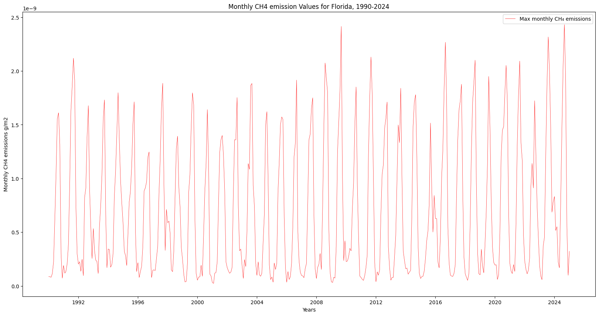

# Import the following libraries
import requests
import folium
import folium.plugins
from folium import Map, TileLayer
from pystac_client import Client
import branca
import pandas as pd
import matplotlib.pyplot as plt
from stats_module import generate_stats, clean_stats, display_statsWetland Methane Emissions, LPJ-EOSIM Model
Global, monthly 0.5 degree resolution methane emission estimate from wetlands, LPJ-EOSIM Model
Access this Notebook
You can launch this notebook in the US GHG Center JupyterHub by clicking the link below. If you are a new user, you should first sign up for the hub by filling out this request form and providing the required information.
Access the Wetland Methane Emissions, LPJ-EOSIM Model notebook in the US GHG Center JupyterHub.
Table of Contents
Data Summary and Application
- Spatial coverage: Global
- Spatial resolution: 0.5° x 0.5°
- Temporal extent: January 1, 1990 - ongoing
- Temporal resolution: Monthly
- Unit: Kilograms of methane per meter squared per second (kg CH₄/m²/s)
- Utility: Climate Research
For more, visit the Wetland Methane Emissions, LPJ-EOSIM Model data overview page.
Approach
- Identify available dates and temporal frequency of observations for the given collection using the GHGC API
/stacendpoint. The collection processed in this notebook is the Wetland Methane Emissions, LPJ-EOSIM Model data product. - Pass the STAC item into the raster API
/collections/{collection_id}/items/{item_id}/tilejson.jsonendpoint. - Using
folium.plugins.DualMap, visualize two tiles (side-by-side), allowing time point comparison. - After the visualization, perform zonal statistics for a given polygon.
About the Data
Methane (CH₄) emissions from vegetated wetlands are estimated to be the largest natural source of methane in the global CH₄ budget, contributing to roughly one third of the total of natural and anthropogenic emissions. Wetland CH₄ is produced by microbes breaking down organic matter in the oxygen deprived environment of inundated soils. Due to limited data availability, the details of the role of wetland CH₄ emissions have thus far been underrepresented. Using the Earth Observation SIMulator version (LPJ-EOSIM) of the Lund-Potsdam-Jena Dynamic Global Vegetation Model (LPJ-DGVM) global CH₄ emissions from wetlands are estimated at 0.5° x 0.5 degree spatial resolution. By simulating wetland extent and using characteristics of inundated areas, such as wetland soil moisture, temperature, and carbon content, the model provides estimates of CH₄ quantities emitted into the atmosphere. This dataset shows concentrated methane sources from tropical and high latitude ecosystems. The LPJ-EOSIM Wetland Methane Emissions dataset consists of global daily model estimates of terrestrial wetland methane emissions from 1990 to the present, with data added bimonthly. The monthly data has been curated by aggregating the daily files. The estimates are regularly used in conjunction with NASA’s Goddard Earth Observing System (GEOS) model to simulate the impact of wetlands and other methane sources on atmospheric methane concentrations, to compare against satellite and airborne data, and to improve understanding and prediction of wetland emissions.
For more information regarding this dataset, please visit the U.S. Greenhouse Gas Center.
Install the Required Libraries
Required libraries are pre-installed on the GHG Center Hub. If you need to run this notebook elsewhere, please install them with this line in a code cell:
%pip install requests folium rasterstats pystac_client pandas matplotlib –quiet
Query the STAC API
First, you need to import the required libraries. Once imported, they allow better execution of a query in the GHG Center Spatio Temporal Asset Catalog (STAC) Application Programming Interface (API) where the granules for this collection are stored. You will learn the functionality of each library throughout the notebook.
# Provide the STAC and RASTER API endpoints
# The endpoint is referring to a location within the API that executes a request on a data collection nesting on the server.
# The STAC API is a catalog of all the existing data collections that are stored in the GHG Center.
STAC_API_URL = "https://earth.gov/ghgcenter/api/stac"
# The RASTER API is used to fetch collections for visualization
RASTER_API_URL = "https://earth.gov/ghgcenter/api/raster"STAC API Collection Names
Now, you must fetch the dataset from the STAC API by defining its associated STAC API collection ID as a variable. The collection ID, also known as the collection name, for the Wetland Methane Emissions, LPJ-EOSIM Model dataset is lpjeosim-wetlandch4-monthgrid-v1
# The collection name is used to fetch the dataset from the STAC API. First, we define the collection name as a variable
# Name of the collection for the wetland methane emissions LPJ-EOSIM Model
collection_name = "lpjeosim-wetlandch4-monthgrid-v1"
# Next, we need to specify the asset name for this collection
# The asset name is referring to the raster band containing the pixel values for the parameter of interest
asset_name = "ensemble-mean-ch4-wetlands-emissions"Next, you will examine the contents of the collection under the temporal variable. You’ll see that the data is available from January 2020 to December 2022. Looking at the dashboard:time density, you can observe that the data is periodic with monthly time density.
# Using PySTAC client
# Fetch the collection from the STAC API using the appropriate endpoint
# The 'pystac' library allows a HTTP request possible
catalog = Client.open(STAC_API_URL)
collection = catalog.get_collection(collection_name)
# Print the properties of the collection to the console
collection- type "Collection"
- id "lpjeosim-wetlandch4-monthgrid-v1"
- stac_version "1.0.0"
- description "Global, monthly estimates of methane (CH₄) emissions from terrestrial wetlands at 0.5 x 0.5 degree spatial resolution using the Earth Observation SIMulator version (LPJ-EOSIM) of the Lund-Potsdam-Jena Dynamic Global Vegetation Model (LPJ-DGVM). Methane emissions from vegetated wetlands are estimated to be the largest natural source of methane in the global CH₄ budget, contributing to roughly one third of the total of natural and anthropogenic emissions. Wetland CH₄ is produced by microbes breaking down organic matter in the oxygen deprived environment of inundated soils. Due to limited data availability, the details of the role of wetland CH₄ emissions have thus far been underrepresented. The LPJ-EOSIM model estimates wetland methane emissions by simulating wetland extent and using characteristics of these inundated areas such as soil moisture, temperature, and carbon content to estimate CH₄ quantities emitted into the atmosphere. Input climate forcing data comes from Modern-Era Retrospective analysis for Research and Applications Version 2 (MERRA-2) data and ECMWF Re-Analysis data (ERA5). An ensemble layer provides the result of the mean of the MERRA-2 and ERA5 layers. All data layers are in units of kilograms of methane per meter squared per second. The source data can be found at https://doi.org/10.5067/Community/LPJ-EOSIM/LPJ_EOSIM_L2_MCH4E.001 and https://doi.org/10.5067/Community/LPJ-EOSIM/LPJ_EOSIM_L2_MCH4E_LL.001."
links[] 4 items
0
- rel "items"
- href "https://earth.gov/ghgcenter/api/stac/collections/lpjeosim-wetlandch4-monthgrid-v1/items"
- type "application/geo+json"
1
- rel "parent"
- href "https://earth.gov/ghgcenter/api/stac/"
- type "application/json"
2
- rel "root"
- href "https://earth.gov/ghgcenter/api/stac"
- type "application/json"
- title "US GHG Center STAC API"
3
- rel "self"
- href "https://earth.gov/ghgcenter/api/stac/collections/lpjeosim-wetlandch4-monthgrid-v1"
- type "application/json"
stac_extensions[] 2 items
- 0 "https://stac-extensions.github.io/render/v1.0.0/schema.json"
- 1 "https://stac-extensions.github.io/item-assets/v1.0.0/schema.json"
renders
dashboard
assets[] 1 items
- 0 "ensemble-mean-ch4-wetlands-emissions"
rescale[] 1 items
0[] 2 items
- 0 0
- 1 3e-09
- colormap_name "magma"
era5-ch4-wetlands-emissions
assets[] 1 items
- 0 "era5-ch4-wetlands-emissions"
rescale[] 1 items
0[] 2 items
- 0 0
- 1 3e-09
- colormap_name "magma"
merra2-ch4-wetlands-emissions
assets[] 1 items
- 0 "merra2-ch4-wetlands-emissions"
rescale[] 1 items
0[] 2 items
- 0 0
- 1 3e-09
- colormap_name "magma"
ensemble-mean-ch4-wetlands-emissions
assets[] 1 items
- 0 "ensemble-mean-ch4-wetlands-emissions"
rescale[] 1 items
0[] 2 items
- 0 0
- 1 3e-09
- colormap_name "magma"
item_assets
era5-ch4-wetlands-emissions
- type "image/tiff; application=geotiff; profile=cloud-optimized"
roles[] 2 items
- 0 "data"
- 1 "layer"
- title "(Monthly) (ERA5) Wetland CH₄ Emissions LPJ-EOSIM Model"
- description "Monthly CH₄ from wetlands constructed using ERA5 climate forcing data input to the LPJ-EOSIM model."
merra2-ch4-wetlands-emissions
- type "image/tiff; application=geotiff; profile=cloud-optimized"
roles[] 2 items
- 0 "data"
- 1 "layer"
- title "(Monthly) (MERRA-2) Wetland CH₄ Emissions LPJ-EOSIM Model"
- description "Monthly CH₄ emissions from wetlands constructed using MERRA-2 climate forcing data input to the LPJ-EOSIM model."
ensemble-mean-ch4-wetlands-emissions
- type "image/tiff; application=geotiff; profile=cloud-optimized"
roles[] 2 items
- 0 "data"
- 1 "layer"
- title "(Monthly) Ensemble Mean Wetland CH₄ Emissions LPJ-EOSIM Model"
- description "Monthly CH₄ emissions from wetlands constructed using an ensemble of climate forcing data sources input to the LPJ-EOSIM model (mean of ERA5 and MERRA-2 layers)."
- dashboard:is_periodic True
- dashboard:time_density "month"
- title "(Monthly) Wetland Methane Emissions, LPJ-EOSIM Model v1"
extent
spatial
bbox[] 1 items
0[] 4 items
- 0 -180
- 1 -90
- 2 180
- 3 90
temporal
interval[] 1 items
0[] 2 items
- 0 "1990-01-01T00:00:00Z"
- 1 "2025-01-31T00:00:00Z"
- license "CC0-1.0"
providers[] 1 items
0
- name "NASA"
summaries
datetime[] 2 items
- 0 "1990-01-01T00:00:00Z"
- 1 "2025-01-31T00:00:00Z"
items = list(collection.get_items()) # Convert the iterator to a list
print(f"Found {len(items)} items")Found 421 items# Examine the first item in the collection
# Keep in mind that a list starts from 0, 1, 2... therefore items[0] is referring to the first item in the list/collection
items[0]- type "Feature"
- stac_version "1.0.0"
- id "lpjeosim-wetlandch4-monthgrid-v1-202501"
properties
- end_datetime "2025-01-31T00:00:00+00:00"
- start_datetime "2025-01-01T00:00:00+00:00"
- datetime None
geometry
- type "Polygon"
coordinates[] 1 items
0[] 5 items
0[] 2 items
- 0 -180
- 1 -90
1[] 2 items
- 0 180
- 1 -90
2[] 2 items
- 0 180
- 1 90
3[] 2 items
- 0 -180
- 1 90
4[] 2 items
- 0 -180
- 1 -90
links[] 5 items
0
- rel "collection"
- href "https://earth.gov/ghgcenter/api/stac/collections/lpjeosim-wetlandch4-monthgrid-v1"
- type "application/json"
1
- rel "parent"
- href "https://earth.gov/ghgcenter/api/stac/collections/lpjeosim-wetlandch4-monthgrid-v1"
- type "application/json"
2
- rel "root"
- href "https://earth.gov/ghgcenter/api/stac"
- type "application/json"
- title "US GHG Center STAC API"
3
- rel "self"
- href "https://earth.gov/ghgcenter/api/stac/collections/lpjeosim-wetlandch4-monthgrid-v1/items/lpjeosim-wetlandch4-monthgrid-v1-202501"
- type "application/geo+json"
4
- rel "preview"
- href "https://earth.gov/ghgcenter/api/raster/collections/lpjeosim-wetlandch4-monthgrid-v1/items/lpjeosim-wetlandch4-monthgrid-v1-202501/map?assets=ensemble-mean-ch4-wetlands-emissions&rescale=0%2C3e-09&colormap_name=magma"
- type "text/html"
- title "Map of Item"
assets
era5-ch4-wetlands-emissions
- href "s3://lp-prod-protected/LPJ_EOSIM_L2_MCH4E_LL.001/LPJ_EOSIM_L2_MCH4E_LL_001_202501/LPJ_EOSIM_L2_MCH4E_LL_ERA5_001_202501.tif"
- type "image/tiff; application=geotiff"
- title "(Monthly) Wetland Methane Emissions, ERA5 LPJ-EOSIM Model v1"
- description "Methane emissions from wetlands in units of grams of methane per meter squared per month. ECMWF Re-Analysis (ERA5) as input to LPJ-EOSIM model."
proj:bbox[] 4 items
- 0 -180.0
- 1 -90.0
- 2 180.0
- 3 90.0
- proj:epsg 4326
- proj:wkt2 "GEOGCS["WGS 84",DATUM["WGS_1984",SPHEROID["WGS 84",6378137,298.257223563,AUTHORITY["EPSG","7030"]],AUTHORITY["EPSG","6326"]],PRIMEM["Greenwich",0,AUTHORITY["EPSG","8901"]],UNIT["degree",0.0174532925199433,AUTHORITY["EPSG","9122"]],AXIS["Latitude",NORTH],AXIS["Longitude",EAST],AUTHORITY["EPSG","4326"]]"
proj:shape[] 2 items
- 0 360
- 1 720
raster:bands[] 1 items
0
- scale 1.0
- nodata -99999.0
- offset 0.0
- sampling "area"
- data_type "float32"
histogram
- max 3.84801124297951e-09
- min 0.0
- count 11
buckets[] 10 items
- 0 61562
- 1 505
- 2 160
- 3 104
- 4 73
- 5 49
- 6 14
- 7 6
- 8 5
- 9 4
statistics
- mean 2.3242455373095205e-11
- stddev 1.395088384790972e-10
- maximum 3.84801124297951e-09
- minimum 0.0
- valid_percent 24.10570987654321
proj:geometry
- type "Polygon"
coordinates[] 1 items
0[] 5 items
0[] 2 items
- 0 -180.0
- 1 -90.0
1[] 2 items
- 0 180.0
- 1 -90.0
2[] 2 items
- 0 180.0
- 1 90.0
3[] 2 items
- 0 -180.0
- 1 90.0
4[] 2 items
- 0 -180.0
- 1 -90.0
proj:projjson
id
- code 4326
- authority "EPSG"
- name "WGS 84"
- type "GeographicCRS"
datum
- name "World Geodetic System 1984"
- type "GeodeticReferenceFrame"
ellipsoid
- name "WGS 84"
- semi_major_axis 6378137
- inverse_flattening 298.257223563
- $schema "https://proj.org/schemas/v0.7/projjson.schema.json"
coordinate_system
axis[] 2 items
0
- name "Geodetic latitude"
- unit "degree"
- direction "north"
- abbreviation "Lat"
1
- name "Geodetic longitude"
- unit "degree"
- direction "east"
- abbreviation "Lon"
- subtype "ellipsoidal"
proj:transform[] 9 items
- 0 0.5
- 1 0.0
- 2 -180.0
- 3 0.0
- 4 -0.5
- 5 90.0
- 6 0.0
- 7 0.0
- 8 1.0
roles[] 2 items
- 0 "data"
- 1 "layer"
merra2-ch4-wetlands-emissions
- href "s3://lp-prod-protected/LPJ_EOSIM_L2_MCH4E_LL.001/LPJ_EOSIM_L2_MCH4E_LL_001_202501/LPJ_EOSIM_L2_MCH4E_LL_MERRA2_001_202501.tif"
- type "image/tiff; application=geotiff"
- title "(Monthly) Wetland Methane Emissions, MERRA-2 LPJ-EOSIM Model v1"
- description "Methane emissions from wetlands in units of grams of methane per meter squared per month. Modern-Era Retrospective analysis for Research and Applications Version 2 (MERRA-2) data as input to LPJ-EOSIM model."
proj:bbox[] 4 items
- 0 -180.0
- 1 -90.0
- 2 180.0
- 3 90.0
- proj:epsg 4326
- proj:wkt2 "GEOGCS["WGS 84",DATUM["WGS_1984",SPHEROID["WGS 84",6378137,298.257223563,AUTHORITY["EPSG","7030"]],AUTHORITY["EPSG","6326"]],PRIMEM["Greenwich",0,AUTHORITY["EPSG","8901"]],UNIT["degree",0.0174532925199433,AUTHORITY["EPSG","9122"]],AXIS["Latitude",NORTH],AXIS["Longitude",EAST],AUTHORITY["EPSG","4326"]]"
proj:shape[] 2 items
- 0 360
- 1 720
raster:bands[] 1 items
0
- scale 1.0
- nodata -99999.0
- offset 0.0
- sampling "area"
- data_type "float32"
histogram
- max 2.9943143520227977e-09
- min 0.0
- count 11
buckets[] 10 items
- 0 61340
- 1 614
- 2 210
- 3 117
- 4 96
- 5 43
- 6 20
- 7 25
- 8 10
- 9 7
statistics
- mean 2.182891906276874e-11
- stddev 1.2641562395629968e-10
- maximum 2.9943143520227977e-09
- minimum 0.0
- valid_percent 24.10570987654321
proj:geometry
- type "Polygon"
coordinates[] 1 items
0[] 5 items
0[] 2 items
- 0 -180.0
- 1 -90.0
1[] 2 items
- 0 180.0
- 1 -90.0
2[] 2 items
- 0 180.0
- 1 90.0
3[] 2 items
- 0 -180.0
- 1 90.0
4[] 2 items
- 0 -180.0
- 1 -90.0
proj:projjson
id
- code 4326
- authority "EPSG"
- name "WGS 84"
- type "GeographicCRS"
datum
- name "World Geodetic System 1984"
- type "GeodeticReferenceFrame"
ellipsoid
- name "WGS 84"
- semi_major_axis 6378137
- inverse_flattening 298.257223563
- $schema "https://proj.org/schemas/v0.7/projjson.schema.json"
coordinate_system
axis[] 2 items
0
- name "Geodetic latitude"
- unit "degree"
- direction "north"
- abbreviation "Lat"
1
- name "Geodetic longitude"
- unit "degree"
- direction "east"
- abbreviation "Lon"
- subtype "ellipsoidal"
proj:transform[] 9 items
- 0 0.5
- 1 0.0
- 2 -180.0
- 3 0.0
- 4 -0.5
- 5 90.0
- 6 0.0
- 7 0.0
- 8 1.0
roles[] 2 items
- 0 "data"
- 1 "layer"
ensemble-mean-ch4-wetlands-emissions
- href "s3://lp-prod-protected/LPJ_EOSIM_L2_MCH4E_LL.001/LPJ_EOSIM_L2_MCH4E_LL_001_202501/LPJ_EOSIM_L2_MCH4E_LL_ensemble_mean_001_202501.tif"
- type "image/tiff; application=geotiff"
- title "(Monthly) Wetland Methane Emissions, Ensemble Mean LPJ-EOSIM Model v1"
- description "Methane emissions from wetlands in units of grams of methane per meter squared per month. Ensemble of multiple climate forcing data sources input to LPJ-EOSIM model."
proj:bbox[] 4 items
- 0 -180.0
- 1 -90.0
- 2 180.0
- 3 90.0
- proj:epsg 4326
- proj:wkt2 "GEOGCS["WGS 84",DATUM["WGS_1984",SPHEROID["WGS 84",6378137,298.257223563,AUTHORITY["EPSG","7030"]],AUTHORITY["EPSG","6326"]],PRIMEM["Greenwich",0,AUTHORITY["EPSG","8901"]],UNIT["degree",0.0174532925199433,AUTHORITY["EPSG","9122"]],AXIS["Latitude",NORTH],AXIS["Longitude",EAST],AUTHORITY["EPSG","4326"]]"
proj:shape[] 2 items
- 0 360
- 1 720
raster:bands[] 1 items
0
- scale 1.0
- nodata -99999.0
- offset 0.0
- sampling "area"
- data_type "float32"
histogram
- max 3.026227712865648e-09
- min 0.0
- count 11
buckets[] 10 items
- 0 61306
- 1 610
- 2 217
- 3 122
- 4 93
- 5 82
- 6 27
- 7 12
- 8 7
- 9 6
statistics
- mean 2.265072959315403e-11
- stddev 1.300032886444663e-10
- maximum 3.026227712865648e-09
- minimum 0.0
- valid_percent 24.10570987654321
proj:geometry
- type "Polygon"
coordinates[] 1 items
0[] 5 items
0[] 2 items
- 0 -180.0
- 1 -90.0
1[] 2 items
- 0 180.0
- 1 -90.0
2[] 2 items
- 0 180.0
- 1 90.0
3[] 2 items
- 0 -180.0
- 1 90.0
4[] 2 items
- 0 -180.0
- 1 -90.0
proj:projjson
id
- code 4326
- authority "EPSG"
- name "WGS 84"
- type "GeographicCRS"
datum
- name "World Geodetic System 1984"
- type "GeodeticReferenceFrame"
ellipsoid
- name "WGS 84"
- semi_major_axis 6378137
- inverse_flattening 298.257223563
- $schema "https://proj.org/schemas/v0.7/projjson.schema.json"
coordinate_system
axis[] 2 items
0
- name "Geodetic latitude"
- unit "degree"
- direction "north"
- abbreviation "Lat"
1
- name "Geodetic longitude"
- unit "degree"
- direction "east"
- abbreviation "Lon"
- subtype "ellipsoidal"
proj:transform[] 9 items
- 0 0.5
- 1 0.0
- 2 -180.0
- 3 0.0
- 4 -0.5
- 5 90.0
- 6 0.0
- 7 0.0
- 8 1.0
roles[] 2 items
- 0 "data"
- 1 "layer"
rendered_preview
- href "https://earth.gov/ghgcenter/api/raster/collections/lpjeosim-wetlandch4-monthgrid-v1/items/lpjeosim-wetlandch4-monthgrid-v1-202501/preview.png?assets=ensemble-mean-ch4-wetlands-emissions&rescale=0%2C3e-09&colormap_name=magma"
- type "image/png"
- title "Rendered preview"
- rel "preview"
roles[] 1 items
- 0 "overview"
bbox[] 4 items
- 0 -180.0
- 1 -90.0
- 2 180.0
- 3 90.0
stac_extensions[] 2 items
- 0 "https://stac-extensions.github.io/raster/v1.1.0/schema.json"
- 1 "https://stac-extensions.github.io/projection/v1.1.0/schema.json"
- collection "lpjeosim-wetlandch4-monthgrid-v1"
Below, we are entering the minimum and maximum values to provide our upper and lower bounds in the rescale_values.
Visual Comparison Across Time Periods
You will now explore changes in methane emissions at a given location and time. You will visualize the outputs on a map using folium.
# Now we create a dictionary where the start datetime values for each granule is queried more explicitly by year and month (e.g., 2020-02)
# To access the year value from each item more easily, this will let us query more explicitly by year and month (e.g., 2020-02)
items = {item.properties["start_datetime"][:7]: item for item in collection.get_items()}Now, we will pass the item id, collection name, and rescaling_factor to the Raster API endpoint. We will do this twice, once for month 1 mentioned in the next cell and again for month 2, so we can visualize each event independently.
# Choose a color for displaying the tiles
# Please refer to matplotlib library if you'd prefer choosing a different color ramp.
# For more information on Colormaps in Matplotlib, please visit https://matplotlib.org/stable/users/explain/colors/colormaps.html
color_map = "magma"
# Make a GET request to retrieve information for the date mentioned below
first_date = items["2000-08"]
# Extract collection name and item ID
collection_id = first_date.collection_id
item_id = first_date.id
object = first_date.assets[asset_name]
raster_bands = object.extra_fields.get("raster:bands", [{}])
rescale_values = {
"max": raster_bands[0].get("histogram", {}).get("max"),
"min": raster_bands[0].get("histogram", {}).get("min"),
}
print(rescale_values){'max': 2.8342954649929197e-09, 'min': 0.0}# Make a GET request to retrieve information for the date mentioned below
month1_tile = requests.get(
f"{RASTER_API_URL}/collections/{collection_id}/items/{item_id}/tilejson.json?"
f"&assets={asset_name}"
f"&color_formula=gamma+r+1.05&colormap_name={color_map}"
f"&rescale={rescale_values['min']},{rescale_values['max']}"
).json()
# Print the properties of the retrieved granule to the console
month1_tile{'tilejson': '2.2.0',
'version': '1.0.0',
'scheme': 'xyz',
'tiles': ['https://earth.gov/ghgcenter/api/raster/collections/lpjeosim-wetlandch4-monthgrid-v1/items/lpjeosim-wetlandch4-monthgrid-v1-200008/tiles/WebMercatorQuad/{z}/{x}/{y}@1x?assets=ensemble-mean-ch4-wetlands-emissions&color_formula=gamma+r+1.05&colormap_name=magma&rescale=0.0%2C2.8342954649929197e-09'],
'minzoom': 0,
'maxzoom': 24,
'bounds': [-180.0, -90.0, 180.0, 90.0],
'center': [0.0, 0.0, 0]}# Make a GET request to retrieve information for date mentioned below
second_date = items["2020-08"]
# Extract collection name and item ID
collection_id = second_date.collection_id
item_id = second_date.id
object = second_date.assets[asset_name]
raster_bands = object.extra_fields.get("raster:bands", [{}])
rescale_values = {
"max": raster_bands[0].get("histogram", {}).get("max"),
"min": raster_bands[0].get("histogram", {}).get("min"),
}
print(rescale_values)
month2_tile = requests.get(
f"{RASTER_API_URL}/collections/{collection_id}/items/{item_id}/tilejson.json?"
f"&assets={asset_name}"
f"&color_formula=gamma+r+1.05&colormap_name={color_map}"
f"&rescale={rescale_values['min']},{rescale_values['max']}"
).json()
# Print the properties of the retrieved granule to the console
month2_tile{'max': 2.880736316157595e-09, 'min': 0.0}{'tilejson': '2.2.0',
'version': '1.0.0',
'scheme': 'xyz',
'tiles': ['https://earth.gov/ghgcenter/api/raster/collections/lpjeosim-wetlandch4-monthgrid-v1/items/lpjeosim-wetlandch4-monthgrid-v1-202008/tiles/WebMercatorQuad/{z}/{x}/{y}@1x?assets=ensemble-mean-ch4-wetlands-emissions&color_formula=gamma+r+1.05&colormap_name=magma&rescale=0.0%2C2.880736316157595e-09'],
'minzoom': 0,
'maxzoom': 24,
'bounds': [-180.0, -90.0, 180.0, 90.0],
'center': [0.0, 0.0, 0]}Map Out Selected Tiles
For this study, you are going to compare the CH₄ levels along the coast of Florida.
# The Area of Interest (AOI) is set to a region in Florida (USA)
florida_aoi = {
"type": "Feature", # Create a feature object
"properties": {},
"geometry": { # Set the bounding coordinates for the polygon
"coordinates": [
[
# [longitude, latitude]
[-80.92, 26.09], # Northwest Bounding Coordinate
[-80.92, 25.30], # Southwest Bounding Coordinate
[-80.40, 25.30], # Southeast Bounding Coordinate
[-80.40, 26.09], # Northeast Bounding Coordinate
[-80.92, 26.09], # Closing the polygon at the Northwest Bounding Coordinate
]
],
"type": "Polygon",
},
}# For this study we are going to compare the CH₄ Emissions for month1 and month2 along the coast of California
# To change the location, you can simply insert the latitude and longitude of the area of your interest in the "location=(LAT, LONG)" statement
# Set initial zoom and center of map
# 'folium.plugins' allows mapping side-by-side
map_ = folium.plugins.DualMap(location=(26, -80), zoom_start=6)
# Define the first map layer for tile fetched for month 1
# The TileLayer library helps in manipulating and displaying raster layers on a map
map_layer_month1 = TileLayer(
tiles=month1_tile["tiles"][0], # Path to retrieve the tile
attr="GHG", # Set the attribution
opacity=0.5, # Adjust the transparency of the layer
name=f"{first_date} Mean Wetland CH₄ Emissions", # Title for the layer
overlay= True, # The layer can be overlaid on the map
legendEnabled = True # Enable displaying the legend on the map
)
# Add the first layer to the Dual Map
map_layer_month1.add_to(map_.m1)
# Define the second map layer for the tile fetched for month 2
map_layer_month2 = TileLayer(
tiles=month2_tile["tiles"][0], # Path to retrieve the tile
attr="GHG", # Set the attribution
opacity=0.5, # Adjust the transparency of the layer
name=f"{second_date} Mean Wetland CH₄ Emissions", # Title for the layer
overlay= True, # The layer can be overlaid on the map
legendEnabled = True # Enable displaying the legend on the map
)
# Add the second layer to the Dual Map
map_layer_month2.add_to(map_.m2)
# Display data markers (titles) on both maps
folium.Marker((26, -80), tooltip="both").add_to(map_)
folium.GeoJson(florida_aoi, name="Wetlands, Florida, USA").add_to(map_)
folium.LayerControl(collapsed=False).add_to(map_)
# Visualize the Dual Map
map_Make this Notebook Trusted to load map: File -> Trust Notebook
Calculate Zonal Statistics
Now that you created the polygon for the area of interest, you need to develop a function that runs through the data collection and generates the statistics for a specific item (granule) within the boundaries of the AOI polygon.
# Check the total number of items available within the collection
items = requests.get(
f"{STAC_API_URL}/collections/{collection_name}/items?limit=800"
).json()["features"]
# Print the total number of items (granules) found
print(f"Found {len(items)} items")Found 421 items# Examine the first item in the collection
items[0]{'id': 'lpjeosim-wetlandch4-monthgrid-v1-202501',
'bbox': [-180.0, -90.0, 180.0, 90.0],
'type': 'Feature',
'links': [{'rel': 'collection',
'type': 'application/json',
'href': 'https://earth.gov/ghgcenter/api/stac/collections/lpjeosim-wetlandch4-monthgrid-v1'},
{'rel': 'parent',
'type': 'application/json',
'href': 'https://earth.gov/ghgcenter/api/stac/collections/lpjeosim-wetlandch4-monthgrid-v1'},
{'rel': 'root',
'type': 'application/json',
'href': 'https://earth.gov/ghgcenter/api/stac/'},
{'rel': 'self',
'type': 'application/geo+json',
'href': 'https://earth.gov/ghgcenter/api/stac/collections/lpjeosim-wetlandch4-monthgrid-v1/items/lpjeosim-wetlandch4-monthgrid-v1-202501'},
{'title': 'Map of Item',
'href': 'https://earth.gov/ghgcenter/api/raster/collections/lpjeosim-wetlandch4-monthgrid-v1/items/lpjeosim-wetlandch4-monthgrid-v1-202501/map?assets=ensemble-mean-ch4-wetlands-emissions&rescale=0%2C3e-09&colormap_name=magma',
'rel': 'preview',
'type': 'text/html'}],
'assets': {'era5-ch4-wetlands-emissions': {'href': 's3://lp-prod-protected/LPJ_EOSIM_L2_MCH4E_LL.001/LPJ_EOSIM_L2_MCH4E_LL_001_202501/LPJ_EOSIM_L2_MCH4E_LL_ERA5_001_202501.tif',
'type': 'image/tiff; application=geotiff',
'roles': ['data', 'layer'],
'title': '(Monthly) Wetland Methane Emissions, ERA5 LPJ-EOSIM Model v1',
'proj:bbox': [-180.0, -90.0, 180.0, 90.0],
'proj:epsg': 4326,
'proj:wkt2': 'GEOGCS["WGS 84",DATUM["WGS_1984",SPHEROID["WGS 84",6378137,298.257223563,AUTHORITY["EPSG","7030"]],AUTHORITY["EPSG","6326"]],PRIMEM["Greenwich",0,AUTHORITY["EPSG","8901"]],UNIT["degree",0.0174532925199433,AUTHORITY["EPSG","9122"]],AXIS["Latitude",NORTH],AXIS["Longitude",EAST],AUTHORITY["EPSG","4326"]]',
'proj:shape': [360, 720],
'description': 'Methane emissions from wetlands in units of grams of methane per meter squared per month. ECMWF Re-Analysis (ERA5) as input to LPJ-EOSIM model.',
'raster:bands': [{'scale': 1.0,
'nodata': -99999.0,
'offset': 0.0,
'sampling': 'area',
'data_type': 'float32',
'histogram': {'max': 3.84801124297951e-09,
'min': 0.0,
'count': 11,
'buckets': [61562, 505, 160, 104, 73, 49, 14, 6, 5, 4]},
'statistics': {'mean': 2.3242455373095205e-11,
'stddev': 1.395088384790972e-10,
'maximum': 3.84801124297951e-09,
'minimum': 0.0,
'valid_percent': 24.10570987654321}}],
'proj:geometry': {'type': 'Polygon',
'coordinates': [[[-180.0, -90.0],
[180.0, -90.0],
[180.0, 90.0],
[-180.0, 90.0],
[-180.0, -90.0]]]},
'proj:projjson': {'id': {'code': 4326, 'authority': 'EPSG'},
'name': 'WGS 84',
'type': 'GeographicCRS',
'datum': {'name': 'World Geodetic System 1984',
'type': 'GeodeticReferenceFrame',
'ellipsoid': {'name': 'WGS 84',
'semi_major_axis': 6378137,
'inverse_flattening': 298.257223563}},
'$schema': 'https://proj.org/schemas/v0.7/projjson.schema.json',
'coordinate_system': {'axis': [{'name': 'Geodetic latitude',
'unit': 'degree',
'direction': 'north',
'abbreviation': 'Lat'},
{'name': 'Geodetic longitude',
'unit': 'degree',
'direction': 'east',
'abbreviation': 'Lon'}],
'subtype': 'ellipsoidal'}},
'proj:transform': [0.5, 0.0, -180.0, 0.0, -0.5, 90.0, 0.0, 0.0, 1.0]},
'merra2-ch4-wetlands-emissions': {'href': 's3://lp-prod-protected/LPJ_EOSIM_L2_MCH4E_LL.001/LPJ_EOSIM_L2_MCH4E_LL_001_202501/LPJ_EOSIM_L2_MCH4E_LL_MERRA2_001_202501.tif',
'type': 'image/tiff; application=geotiff',
'roles': ['data', 'layer'],
'title': '(Monthly) Wetland Methane Emissions, MERRA-2 LPJ-EOSIM Model v1',
'proj:bbox': [-180.0, -90.0, 180.0, 90.0],
'proj:epsg': 4326,
'proj:wkt2': 'GEOGCS["WGS 84",DATUM["WGS_1984",SPHEROID["WGS 84",6378137,298.257223563,AUTHORITY["EPSG","7030"]],AUTHORITY["EPSG","6326"]],PRIMEM["Greenwich",0,AUTHORITY["EPSG","8901"]],UNIT["degree",0.0174532925199433,AUTHORITY["EPSG","9122"]],AXIS["Latitude",NORTH],AXIS["Longitude",EAST],AUTHORITY["EPSG","4326"]]',
'proj:shape': [360, 720],
'description': 'Methane emissions from wetlands in units of grams of methane per meter squared per month. Modern-Era Retrospective analysis for Research and Applications Version 2 (MERRA-2) data as input to LPJ-EOSIM model.',
'raster:bands': [{'scale': 1.0,
'nodata': -99999.0,
'offset': 0.0,
'sampling': 'area',
'data_type': 'float32',
'histogram': {'max': 2.9943143520227977e-09,
'min': 0.0,
'count': 11,
'buckets': [61340, 614, 210, 117, 96, 43, 20, 25, 10, 7]},
'statistics': {'mean': 2.182891906276874e-11,
'stddev': 1.2641562395629968e-10,
'maximum': 2.9943143520227977e-09,
'minimum': 0.0,
'valid_percent': 24.10570987654321}}],
'proj:geometry': {'type': 'Polygon',
'coordinates': [[[-180.0, -90.0],
[180.0, -90.0],
[180.0, 90.0],
[-180.0, 90.0],
[-180.0, -90.0]]]},
'proj:projjson': {'id': {'code': 4326, 'authority': 'EPSG'},
'name': 'WGS 84',
'type': 'GeographicCRS',
'datum': {'name': 'World Geodetic System 1984',
'type': 'GeodeticReferenceFrame',
'ellipsoid': {'name': 'WGS 84',
'semi_major_axis': 6378137,
'inverse_flattening': 298.257223563}},
'$schema': 'https://proj.org/schemas/v0.7/projjson.schema.json',
'coordinate_system': {'axis': [{'name': 'Geodetic latitude',
'unit': 'degree',
'direction': 'north',
'abbreviation': 'Lat'},
{'name': 'Geodetic longitude',
'unit': 'degree',
'direction': 'east',
'abbreviation': 'Lon'}],
'subtype': 'ellipsoidal'}},
'proj:transform': [0.5, 0.0, -180.0, 0.0, -0.5, 90.0, 0.0, 0.0, 1.0]},
'ensemble-mean-ch4-wetlands-emissions': {'href': 's3://lp-prod-protected/LPJ_EOSIM_L2_MCH4E_LL.001/LPJ_EOSIM_L2_MCH4E_LL_001_202501/LPJ_EOSIM_L2_MCH4E_LL_ensemble_mean_001_202501.tif',
'type': 'image/tiff; application=geotiff',
'roles': ['data', 'layer'],
'title': '(Monthly) Wetland Methane Emissions, Ensemble Mean LPJ-EOSIM Model v1',
'proj:bbox': [-180.0, -90.0, 180.0, 90.0],
'proj:epsg': 4326,
'proj:wkt2': 'GEOGCS["WGS 84",DATUM["WGS_1984",SPHEROID["WGS 84",6378137,298.257223563,AUTHORITY["EPSG","7030"]],AUTHORITY["EPSG","6326"]],PRIMEM["Greenwich",0,AUTHORITY["EPSG","8901"]],UNIT["degree",0.0174532925199433,AUTHORITY["EPSG","9122"]],AXIS["Latitude",NORTH],AXIS["Longitude",EAST],AUTHORITY["EPSG","4326"]]',
'proj:shape': [360, 720],
'description': 'Methane emissions from wetlands in units of grams of methane per meter squared per month. Ensemble of multiple climate forcing data sources input to LPJ-EOSIM model.',
'raster:bands': [{'scale': 1.0,
'nodata': -99999.0,
'offset': 0.0,
'sampling': 'area',
'data_type': 'float32',
'histogram': {'max': 3.026227712865648e-09,
'min': 0.0,
'count': 11,
'buckets': [61306, 610, 217, 122, 93, 82, 27, 12, 7, 6]},
'statistics': {'mean': 2.265072959315403e-11,
'stddev': 1.300032886444663e-10,
'maximum': 3.026227712865648e-09,
'minimum': 0.0,
'valid_percent': 24.10570987654321}}],
'proj:geometry': {'type': 'Polygon',
'coordinates': [[[-180.0, -90.0],
[180.0, -90.0],
[180.0, 90.0],
[-180.0, 90.0],
[-180.0, -90.0]]]},
'proj:projjson': {'id': {'code': 4326, 'authority': 'EPSG'},
'name': 'WGS 84',
'type': 'GeographicCRS',
'datum': {'name': 'World Geodetic System 1984',
'type': 'GeodeticReferenceFrame',
'ellipsoid': {'name': 'WGS 84',
'semi_major_axis': 6378137,
'inverse_flattening': 298.257223563}},
'$schema': 'https://proj.org/schemas/v0.7/projjson.schema.json',
'coordinate_system': {'axis': [{'name': 'Geodetic latitude',
'unit': 'degree',
'direction': 'north',
'abbreviation': 'Lat'},
{'name': 'Geodetic longitude',
'unit': 'degree',
'direction': 'east',
'abbreviation': 'Lon'}],
'subtype': 'ellipsoidal'}},
'proj:transform': [0.5, 0.0, -180.0, 0.0, -0.5, 90.0, 0.0, 0.0, 1.0]},
'rendered_preview': {'title': 'Rendered preview',
'href': 'https://earth.gov/ghgcenter/api/raster/collections/lpjeosim-wetlandch4-monthgrid-v1/items/lpjeosim-wetlandch4-monthgrid-v1-202501/preview.png?assets=ensemble-mean-ch4-wetlands-emissions&rescale=0%2C3e-09&colormap_name=magma',
'rel': 'preview',
'roles': ['overview'],
'type': 'image/png'}},
'geometry': {'type': 'Polygon',
'coordinates': [[[-180, -90],
[180, -90],
[180, 90],
[-180, 90],
[-180, -90]]]},
'collection': 'lpjeosim-wetlandch4-monthgrid-v1',
'properties': {'end_datetime': '2025-01-31T00:00:00+00:00',
'start_datetime': '2025-01-01T00:00:00+00:00'},
'stac_version': '1.0.0',
'stac_extensions': ['https://stac-extensions.github.io/raster/v1.1.0/schema.json',
'https://stac-extensions.github.io/projection/v1.1.0/schema.json']}Now we need to develop a function that runs through the data collection and generates the statistics for a specific item (granule) within the boundaries of the AOI polygon.
With the function above, we can generate the statistics for the area of interest.
%%time
# %%time = Wall time (execution time) for running the code below
# Generate statistics using the created function "generate_stats" within the bounding box defined by the AOI polygon
stats = [generate_stats(item, florida_aoi,asset_name) for item in items]# Print the stats for the first item in the collection
stats[0]{'statistics': {'b1': {'min': 0.0,
'max': 3.227998701671453e-10,
'mean': 2.0262994060438189e-10,
'count': 1.6800000667572021,
'sum': 3.4041830465625367e-10,
'std': 1.5164446147886878e-10,
'median': 3.227998701671453e-10,
'majority': 0.0,
'minority': 2.772134743977972e-10,
'unique': 3.0,
'histogram': [[3, 0, 0, 0, 0, 0, 0, 0, 1, 1],
[0.0,
3.227998771060392e-11,
6.455997542120784e-11,
9.683996660125871e-11,
1.2911995084241568e-10,
1.6139993508357264e-10,
1.9367993320251742e-10,
2.2595991744367439e-10,
2.5823990168483135e-10,
2.905198859259883e-10,
3.227998701671453e-10]],
'valid_percent': 83.33,
'masked_pixels': 1.0,
'valid_pixels': 5.0,
'percentile_2': 0.0,
'percentile_98': 3.227998701671453e-10}},
'datetime': '2025-01-01T00:00:00+00:00'}# Apply the generated function on the stats data
df = clean_stats(stats)
# Display the stats for the first 5 granules in the collection in the table
# Change the value in the parenthesis to show more or a smaller number of rows in the table
df.head(5)| datetime | min | max | mean | count | sum | std | median | majority | minority | unique | histogram | valid_percent | masked_pixels | valid_pixels | percentile_2 | percentile_98 | date | |
|---|---|---|---|---|---|---|---|---|---|---|---|---|---|---|---|---|---|---|
| 0 | 2025-01-01T00:00:00+00:00 | 0.0 | 3.227999e-10 | 2.026299e-10 | 1.68 | 3.404183e-10 | 1.516445e-10 | 3.227999e-10 | 0.0 | 2.772135e-10 | 3.0 | [[3, 0, 0, 0, 0, 0, 0, 0, 1, 1], [0.0, 3.22799... | 83.33 | 1.0 | 5.0 | 0.0 | 3.227999e-10 | 2025-01-01 00:00:00+00:00 |
| 1 | 2024-12-01T00:00:00+00:00 | 0.0 | 9.913254e-11 | 6.102612e-11 | 1.68 | 1.025239e-10 | 4.610612e-11 | 9.913254e-11 | 0.0 | 7.391453e-11 | 3.0 | [[3, 0, 0, 0, 0, 0, 0, 1, 0, 1], [0.0, 9.91325... | 83.33 | 1.0 | 5.0 | 0.0 | 9.913254e-11 | 2024-12-01 00:00:00+00:00 |
| 2 | 2024-11-01T00:00:00+00:00 | 0.0 | 5.510858e-10 | 3.376660e-10 | 1.68 | 5.672789e-10 | 2.559055e-10 | 5.510858e-10 | 0.0 | 3.961203e-10 | 3.0 | [[3, 0, 0, 0, 0, 0, 0, 1, 0, 1], [0.0, 5.51085... | 83.33 | 1.0 | 5.0 | 0.0 | 5.510858e-10 | 2024-11-01 00:00:00+00:00 |
| 3 | 2024-10-01T00:00:00+00:00 | 0.0 | 1.918133e-09 | 1.204259e-09 | 1.68 | 2.023155e-09 | 9.011947e-10 | 1.918133e-09 | 0.0 | 1.649083e-09 | 3.0 | [[3, 0, 0, 0, 0, 0, 0, 0, 1, 1], [0.0, 1.91813... | 83.33 | 1.0 | 5.0 | 0.0 | 1.918133e-09 | 2024-10-01 00:00:00+00:00 |
| 4 | 2024-09-01T00:00:00+00:00 | 0.0 | 2.430519e-09 | 1.531111e-09 | 1.68 | 2.572266e-09 | 1.144570e-09 | 2.430519e-09 | 0.0 | 2.137771e-09 | 3.0 | [[3, 0, 0, 0, 0, 0, 0, 0, 1, 1], [0.0, 2.43051... | 83.33 | 1.0 | 5.0 | 0.0 | 2.430519e-09 | 2024-09-01 00:00:00+00:00 |
Time-Series Analysis
You can now explore the wetland methane emissions time series (January 1990 – December 2024) available for the Texas area of the U.S. You can plot the data set using the code below:
# Determine the width and height of the plot using the 'matplotlib' library
# Figure size: 20 representing the width, 10 representing the height
fig = plt.figure(figsize=(20, 10))
# Plot the time series
plt.plot(
df["date"], # X-axis: date
df["max"], # Y-axis: CH₄ value
color="red", # Line color
linestyle="-", # Line style
linewidth=0.5, # Line width
label="Max monthly CH₄ emissions", # Legend label
)
# Display legend
plt.legend()
# Insert label for the X-axis
plt.xlabel("Years")
# Insert label for the Y-axis
plt.ylabel("Monthly CH4 emissions g/m2")
# Insert title for the plot
plt.title("Monthly CH4 emission Values for Florida, 1990-2024")Text(0.5, 1.0, 'Monthly CH4 emission Values for Florida, 1990-2024')
Summary
In this notebook we have successfully completed the following steps for the STAC collection for the Monthly Wetland Methane Emissions, LPJ-EOSIM Model data: 1. Install and import the necessary libraries 2. Fetch the collection from STAC collections using the appropriate endpoints 3. Count the number of existing granules within the collection 4. Map and compare the CH₄ levels over the Florida region for two distinctive years 5. Create a table that displays the minimum, maximum, and sum of the CH₄ levels for a specified region 6. Generate a time-series graph of the CH₄ levels for a specified region
If you have any questions regarding this user notebook, please contact us using the feedback form.